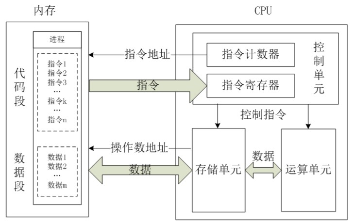
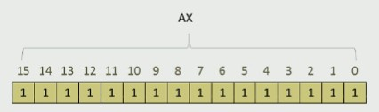
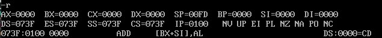
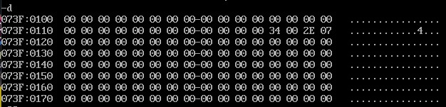
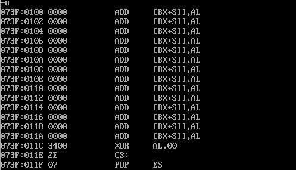
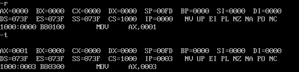
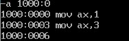

从0开始的汇编语言（二）
前言
从0开始的汇编语言系列，选用的参考书籍是清华大学出版社，王爽老师的《汇编语言第四版》。该系列属于博主的笔记系列，文中会采用一些书中的例子，图片以及思考题供读者阅读，如需详细学习汇编语言可以购入一本，谢谢。
学习之前我们做如下约定（随着学习深入还会出现新的约定）：
- 十六进制数均以H结尾
- 使用8086CPU作为案例
话不多说我们马上开始。
CPU内部组成
通常一个CPU由运算器、控制器、寄存器等器件所组成，这些器件在CPU中中过内部的总线相互连接。

其中运算器进行信息处理，寄存器进行信息存储，控制器控制各种器件进行工作，内部总线将它们相互连接，在它们之间进行数据的传递。
寄存器
对于我们学习汇编来讲，CPU中最为主要的部件是寄存器，寄存器是CPU中程序员可以进行读写操作的部件。程序员通过改变寄存器的内容来实现对CPU的控制。
不同的CPU，寄存器的个数、结构不同。8086CPU有14个寄存器，每一个寄存器都有自己的名字：AX、BX、CX、DX、SI、DI、SP、BP、IP、CS、SS、DS、ES、PSW。
通用寄存器
在8086CPU中所有寄存器都是16位的。其中AX、BX、CX、DX这四个寄存器通常存储一些一般性的数据，被称为通用寄存器。

为了兼容上一代8位CPU，这些通用寄存器可以被分为两个8位寄存器例如AX可以分成AH和AL分别对应寄存器AX的高八位和低八位，同理BX也可以分为BH和BL。
出于对于兼容性的考虑，8086CPU可以对字节（1B）和字（2B）这两种尺寸的数据进行处理。
mov指令与add指令
好啦，接下来我们正式的学习两条汇编指令：mov和add
首先，mov指令，mov指令又被叫做传送指令，大部分寄存器的值都可以被mov指令改变，我们使用高级语言的语法来描述这件事情以加强理解（在写一条汇编指令或者寄存器名称时不区分大小写）：
1 | mov ax,18 <=> ax=18 |
怎么样是不是很直观？没错mov指令的作用和赋值相似，该mov指令控制CPU将18这个数据送入到了寄存器AX中。当然了这里要注意的是在汇编源程序中，数据是不能以字母开头的，也就是说A000H这样的数据是不允许出现在汇编源程序的，要在前面加上一个0才可以，也就是0A000H可以使用。
其次，add指令（在写一条汇编指令或者寄存器名称时不区分大小写）：
1 | add ax,8 <=> AX=AX+8 |
add指令的作用就相当于加上一个数字并且赋值给add指令后的寄存器，该add指令控制CPU将8这个数据与原先AX中的数据相加后赋值给AX。
举一个简单的例子加强对于两个指令的理解：
| 程序段中的指令 | 指令执行后AX中的数据 | 指令执行后BX中的数据 |
|---|---|---|
| mov ax,4E20H | 4E20H | 0000H |
| add ax,1406H | 6226H | 0000H |
| mov bx,2000H | 6226H | 2000H |
| add ax,bx | 8226H | 2000H |
在add指令的使用过程中要注意位数的问题：
现有AL中存储数据C5H此时使用 add AL,93H ，那么执行后AX中的数据是多少？答案是0058H，因为AL是一个8位寄存器，在add指令执行后，得到结果值为158H，这超过了8位的存储大小，所以最高位的“1”被无情“抛弃”（实际上并不是真正的抛弃掉了，只是表示这个”1“装不下了，至于如何处理我们后续再聊）。而且AL和AH都是被当做一个独立的寄存器所使用的，这个“1”并不会储存在AH中。
相应的如果AX中存储数据C5H此时使用 add AX,93H ，那么结果又会如何呢？答案是0158H，因为AX是一个16位寄存器，在add指令执行后，得到结果值为158H，不超过16位的存储大小，所以0158H完整的被存放在了寄存器AX之中。
由此可知，在进行add指令的使用，要注意此次运算到底是几位运算。
物理地址
我们知道CPU访问内存单元需要提供出访问的内存单元的地址，每一个内存单元都有一个唯一的地址，我们称这个唯一的地址就叫做物理地址。CPU必须现在内部形成这个物理地址，才可以通过地址总线传出，访问特定的内存单元。每一种不同的CPU都有这不一样的方式生成物理地址，下面我们讨论8086CPU如何在内部生成该物理地址。
8086CPU生成物理地址的方法
首先我们要知道8086CPU是一个16位结构的CPU，它具有以下特点：
- 运算器一次最多可以处理16位的数据
- 寄存器的最大宽度为16位
- 寄存器和运算器的通路为16位
这就意味着8086CPU一次性能够处理、传输、暂存的信息最大长度是16位。
8086CPU外部有20位地址总线，寻址能力达到了1MB。但因为8086CPU的16位结构导致其表现出来的寻址能力只有64KB为了解决这个问题，8086CPU采用了使用两个16位地址组成一个20位地址。
当8086CPU进行读写内存操作时8086CPU的相关部件提供两个16位的地址，一个叫做段地址，一个叫做偏移地址。两个地址被送入一个叫地址加法器的部件中合成一个20位地址。
看到这里我猜你可能有一个疑惑，怎么就两个16位地址变成了一个20位地址呢？
其实啊，地址加法器有一个独门的公式：物理地址=段地址×16+偏移地址，这样就由两个16位地址变成了一个20位地址。为什么一定是乘16嘞？因为段地址和偏移地址都是一个十六进制数字，通过乘16的方式使段地址整体左移一位。（就像是二进制中 “10”× 2就变成了100）
假如8086CPU要访问123C8H这个地址，那么整体过程就是：
- 相关部件提供段地址 1230H 和偏移地址 00C8H 并送入了地址加法器
- 地址加法器通过公式：物理地址=段地址×16+偏移地址 得到物理地址=1230H×16+00C8H=123C8H
- 地址加法器把物理地址传输给输入输出控制电路
- 输入输出控制电路通过地址总线将物理地址传输给内存
这样8086CPU就实现了对于内存的访问。
对于段的理解
上述提到了段地址的概念，可能让大家理解成内存本身就是一个分段一样的存在，但实则不然，只是CPU操作内存时候采用了分段的方法进行管理。在实际的汇编编程过程中我们可以根据实际需要进行分段处理，由于公式：物理地址=段地址×16+偏移地址 可知一个内存段的起始地址（即段地址×16）必然为16的倍数，因为偏移地址的长度为16位，寻址能力为64KB，所以一个段的长度最大为64KB。
段寄存器
上面我们提到CPU内相关组件会提供段地址和偏移地址给地址加法器，那么到底是什么部件提供的呢？那就是段寄存器所提供的，8086CPU中含有4个段寄存器：CS、DS、SS、ES。这里我们先聊聊CS，后续我们在继续讨论其余段寄存器。
CS和IP
CS和IP是8086CPU中最为关键的两个寄存器，它们指明了CPU现在要读取指令的地址。CS叫做代码段寄存器，IP叫做指令指针寄存器。假设任意时刻CS中数据为M，IP中数据为N，那么8086CPU就会从内存地址为 M×16+N 的内存单元中读取一条指令并且执行。执行指令之后IP会根据指令的字节数自增。（tips：这里要注意M和N只是段地址和偏移地址的一个实例，不只是CS和IP会提供段地址和偏移地址。）
假如8086CPU要执行 mov ax,0123H （长度为3B，在地址20000H处）这个指令 那么整体过程就是：
- CS提供段地址2000H，IP提供偏移地址0000H给地址加法器
- 地址加法器通过公式：物理地址=段地址×16+偏移地址 得到物理地址=2000H×16+0000H=20000H
- 地址加法器把物理地址传输给输入输出控制电路
- 输入输出控制电路通过地址总线将物理地址传输给内存
- 内存通过数据总线返回给CPU指令 mov ax,0123H
- 输入输出控制电路将指令 mov ax,0123H 放入指令缓冲器中
- IP读取到指令长度为3B 自增 3 变为 0003H
- 指令执行
- 读取下一条指令
这样8086CPU就读取并且执行了一条汇编指令。
不知道大家有没有过一个疑问，计算机里面全都是二进制代码，那计算机怎么区分那些二进制代码要当成数据看待，那些二进制代码要当成指令看待呢？学习玩CS IP之后我们可以说会被CS:IP指向的内容就是指令。
修改CS IP 数据 JMP指令
学习了这样一个底层的语言，我们有权利修改寄存器中的数据，我们可以通过修改CS和IP中的数据来让计算机执行我们希望它去执行的指令。这个时候，有些朋友可能已经开始回想，我们之前学习过mov指令，可以用来修改寄存器中的数据，我们故技重施，直接使用mov去修改CS和IP的数据。但事实上这样是不被允许的，为什么嘞？其实答案很简单，因为8086CPU它。。。它做不到呀！！没这个功能。但不用担心，车到山前必有路，我们有可以改变CS IP的指令叫做转移指令（晚一些我们还会深入研究），这里我们介绍一个简单的转移指令：jmp指令。
1 | 如果想同时修改CS IP的值可以用 jmp 段地址:偏移地址 来完成 |
Debug调试指令
学会了这些指令，没地方用怎么能行，取我DOSBOX来，先输入debug，出现一个短杠后就可以使用调试指令啦，接下来就教大家如何使用debug：
1.R命令：查看、改变CPU寄存器的内容

改变寄存器内容只需要在r后面加上寄存器名称即可。
2.D命令：查看内存中的内容

D命令默认根据DS寄存器内容显示，每次显示128个字节的数据，想显示指定位置数据，只需要在D命令后加上 段地址：偏移地址。
3.E命令：改写内存内容
E命令后加上 段地址：偏移地址 即可从指定物理地址后改写内存内容，如果遇到不想改写的内容空格跳过，enter结束。
4.U命令：将内存中的机器指令翻译成汇编指令

U命令将CS:IP指向的机器指令翻译成汇编指令。
5.T命令：执行一条机械指令

T命令执行一条当前CS:IP所指的汇编指令。
6.A命令：以汇编语言的格式向内存中写入一条机器指令

A命令后加 段地址：偏移地址 可以在指定物理地址位置用汇编语言写入一条机器指令。
学会了这些命令，你就可以使用DOSBOX来验证所学内容啦！
 wechat
wechat alipay
alipay